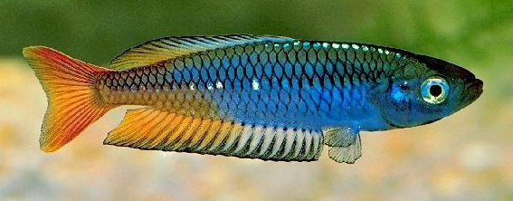
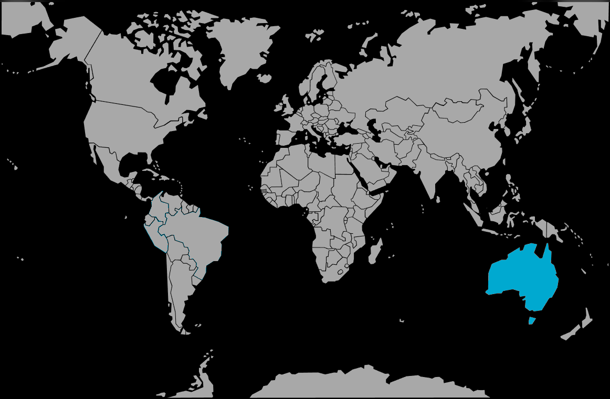

Systématique
- Ordre : Atheriniformes
- Famille : Melanotaeniidae
- Genre : Rhadinocentrus
- Espèce : R. ornatus

Rhadinocentrus ornatus est une espèce de poisson arc-en-ciel endémique d'Australie, unique représentant de son genre. Bien qu'il ressemble morphologiquement aux Melanotaenia, il s'en distingue par l'absence d'épines rigides dans la première nageoire dorsale et des écailles plus fines.
C'est un poisson de taille modeste, atteignant 4 à 6 cm, très apprécié pour son extrême polymorphisme. En effet, la coloration varie considérablement d'une population géographique à l'autre (localités comme Searys Creek, Tin Can Bay, Moreton Island, etc.). Les teintes peuvent inclure le bleu métallique, le rouge vif, le noir ou l'orange, souvent avec des lignes longitudinales néon le long des flancs.
Sa double nageoire dorsale et ses grands yeux irisés sont caractéristiques. C'est une espèce assez robuste une fois acclimatée, mais sensible à la qualité de l'eau.
C'est une espèce grégaire qui doit vivre en banc d'au moins 6 à 8 individus pour se sentir en sécurité et établir une hiérarchie sociale stable. Les mâles paradent fréquemment en intensifiant leurs couleurs et en nageant de manière saccadée autour des femelles.
Généralement paisible, il occupe la zone de surface et de pleine eau. Il convient bien aux bacs communautaires peuplés d'espèces calmes de taille similaire (petits Pseudomugil, tétras, rasboras). Il est cependant déconseillé de mélanger différentes localités géographiques pour éviter l'hybridation et la perte des souches pures.
Mode : ovipare diffuseur.
Le frai se produit généralement le matin, parmi les plantes fines ou les mops de laine synthétique, près de la surface. La femelle pond quelques œufs chaque jour sur une période prolongée.
L'incubation dure entre 6 et 10 jours selon la température. Les alevins nagent immédiatement près de la surface et peuvent être nourris avec des infusoires ou des poudres fines, puis rapidement avec des nauplies d'artémias. Les parents ne s'occupent pas des œufs et peuvent les prédater s'ils sont visibles.
Dimorphisme sexuel : très marqué. Les mâles sont beaucoup plus colorés, avec des reflets métalliques intenses et des nageoires impaires (dorsale et anale) plus allongées et pointues. Les femelles sont généralement gris-argenté ou brunâtres, avec des nageoires plus courtes et arrondies.
Espérance de vie : environ 3 à 5 ans en captivité.
L'espèce est inféodée aux environnements côtiers de type "Wallum" (landes côtières sablonneuses) dans l'est de l'Australie.
Il vit dans des ruisseaux, des marécages et des lacs dunaires aux eaux douces, acides et souvent teintées par les tanins (eau noire), filtrant à travers le sable. La végétation y est constituée de roseaux, de nénuphars et de racines immergées, avec un substrat de sable fin et de débris organiques.
Répartition

Origine naturelle :
- Côte est de l'Australie (Queensland du Sud et Nord de la Nouvelle-Galles du Sud).
- Îles de sable (Moreton Island, North Stradbroke Island, Fraser Island).
- Bassins côtiers dispersés, populations souvent isolées.
Son habitat est fragmenté et parfois menacé par le développement urbain le long de la côte australienne.
Paramètres de maintenance
Température : 20 à 28 °C (tolère des variations saisonnières).
pH : 5,0 à 7,0 (préférence nette pour une eau acide, bien que les souches d'élevage tolèrent le neutre).
GH : 1 à 8 °dGH, eau très douce à douce.
Courant : modéré à faible, avec une bonne oxygénation.
Volume conseillé : minimum 80 L pour un banc, avec une bonne longueur de façade (80 cm) pour la nage.
Régime alimentaire
Régime : omnivore à tendance insectivore.
Dans la nature, il se nourrit d'insectes (terrestres et aquatiques), de larves, de petits crustacés et d'un peu d'algues ou de pollen tombé à la surface.
En aquarium, il accepte tout type de nourriture adaptée à sa taille : granulés, flocons, et surtout du vivant ou congelé (vers de vase, daphnies, artémias) qui stimule ses couleurs.